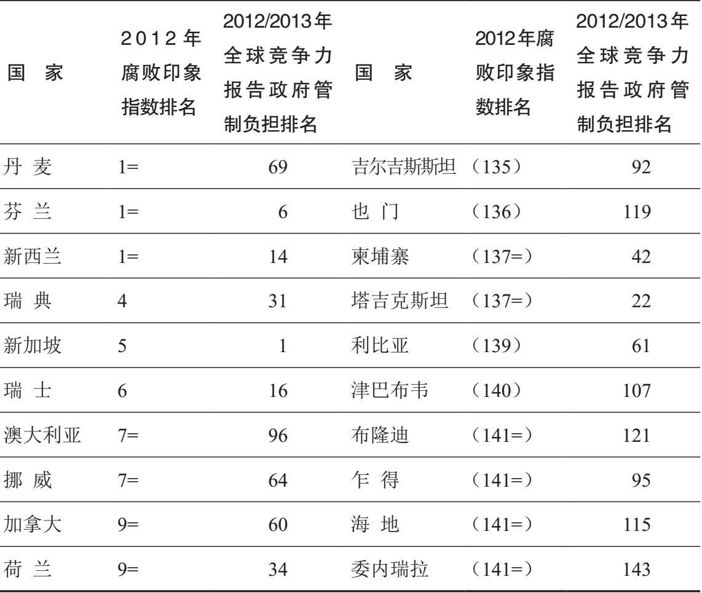
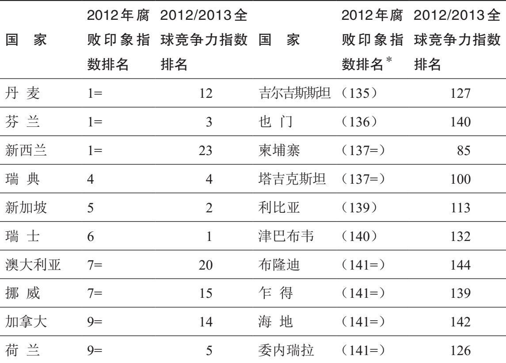
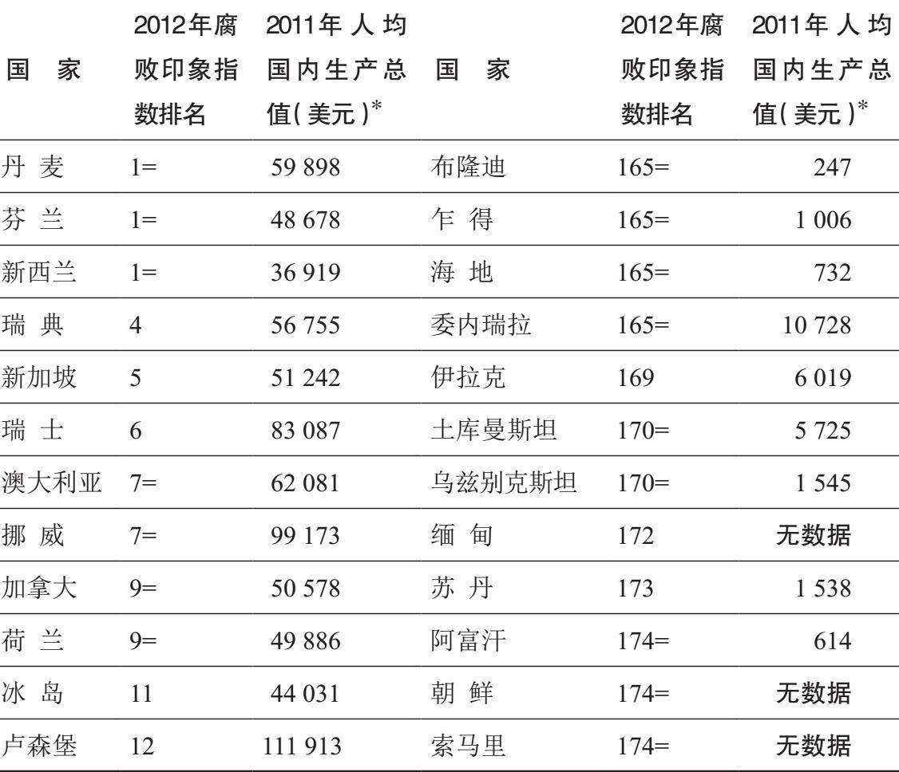
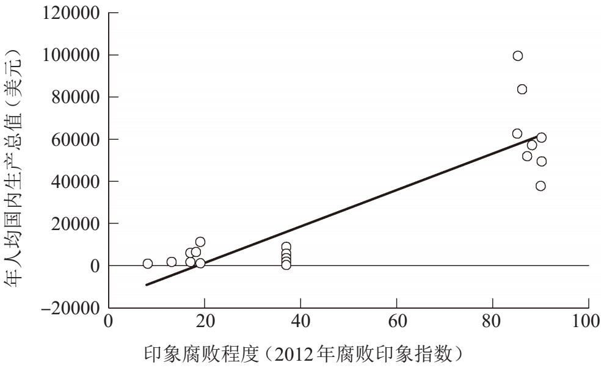
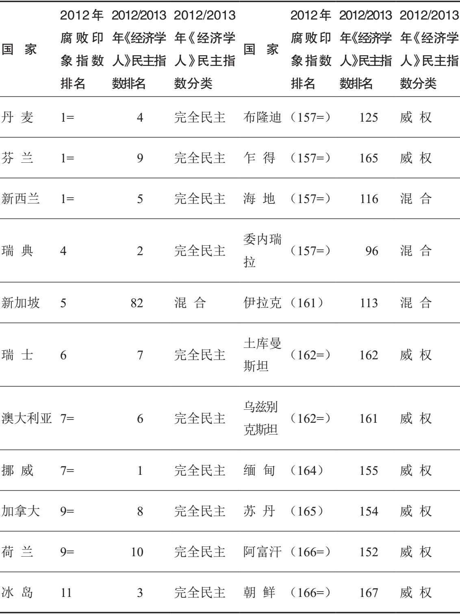
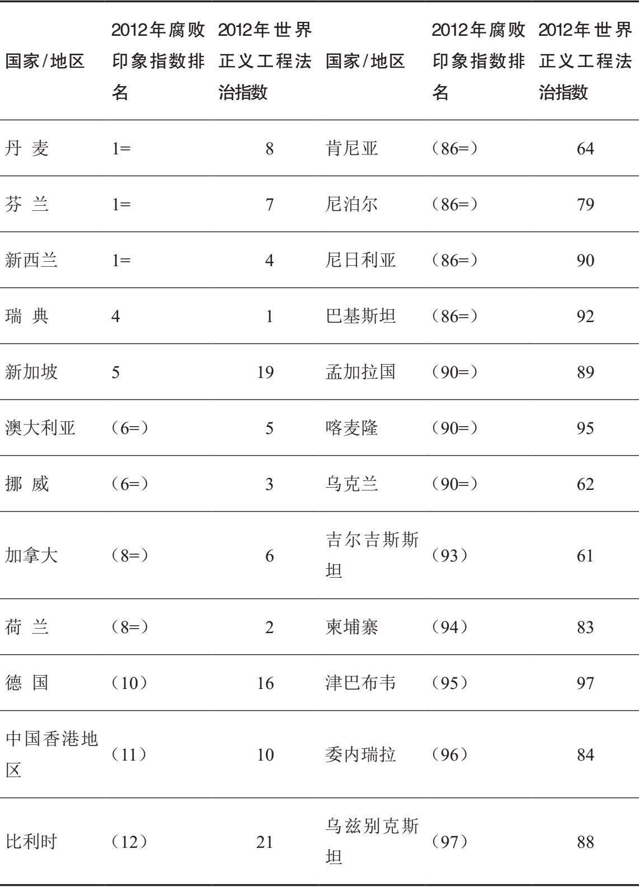
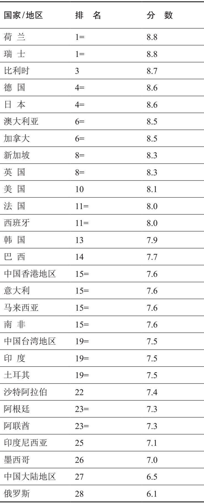
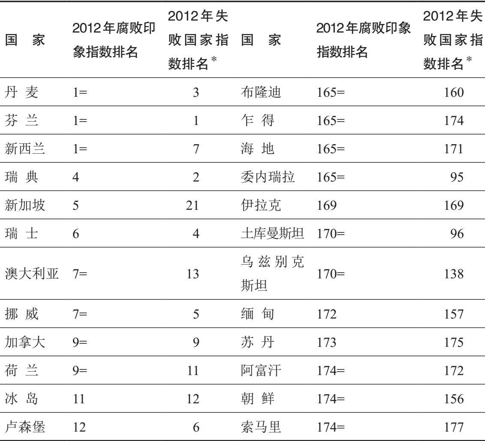

仅仅着眼于个人对腐败所作的解释是不完整的；所有人都从属并受制于环境，我们在此环境下生活和工作。文化已经考察过了，本章的重点是结构因素或制度相关因素；为便于分析，我们将这些因素分为经济的和政治的。
经济因素
近年来已有人指出，经济制度和政策的许多方面都与腐败程度相互关联。其中最为普遍的方面之一，关注的是国家卷入经济活动的程度。该观点由国际货币基金组织的维托·坦齐及其他一些人提出。粗略地说，该主张认为国家越是卷入经济活动，腐败就会越多。乍一听，这种观点似乎很有道理；毕竟，国家卷入经济活动越深，一般就意味着官僚机构越庞大，国家官员和商界人士之间的互动就越多，而这两个方面都容易引起腐败。更多的国家干预通常意味着官员有更多的机会“寻租”——此处意指他们能向愿意支付回报的个人或公司售卖对其有利的决策来获取额外的不当收入。
然而，约翰·耶林和斯特罗姆·撒克的研究显示，一方面，国家机器的规模以及国家在颁发商业许可方面干涉经济的程度，与要求商业企业俯首听命之间并无明确关联；另一方面，前者与腐败程度之间同样无此关联。世界经济论坛每年发布关于各经济体全球竞争力的报告（全球竞争力报告），考察的部分内容就是：要创办并运营一家企业，需要获得多少项许可以及其他形式的官方文书。这一点可以通过将2012年腐败印象指数中前10位和后10位国家的排名，与它们在2012—2013年度全球竞争力报告“政府负担指数”中的排名进行比较来表明（该指数所提的问题是：在你的国家，企业在遵守政府的行政性要求，比如许可、规章和报告方面负担有多重？排名越低，负担越轻）。
表3表明，腐败程度与政府对经济活动的干预程度并不密切相关，像塔吉克斯坦、柬埔寨之类显然高度腐败的国家，官僚程度比丹麦、挪威、加拿大还要低；但是前两者，加上乍得、吉尔吉斯斯坦和利比亚，在2012年的评估中都比澳大利亚官僚程度更低，而澳大利亚对企业合规性的要求是极高的。
然而，全球竞争力报告中比“政府负担指数”包含更多变量的综合指标，即全球竞争力指数（GCI），却显示出两者之间更密切的相关性。在表4中，新西兰的排名属异常数据，澳大利亚也是，虽然没有那么明显；印象腐败程度和经济竞争力综合水平之间的变化却比表3中的变化小得多。
要考察的另一项经济变量是私有化 。一直以国有体制为主的经济体在进行私有化的过程中会产生许多腐败机会，因为部分商界人士在投标时会提供贿赂和回扣，以不公平地获得相对于其他人的优势。对于1990年代后共产主义转型国家中的高度腐败，这个因素很能说明问题。但是，私有化也是对经济管理所持的新自由主义（或华盛顿共识）态度的关键特征，该观点自1970年代末以来已经在全球得到普及；即使在德国这样的国家，也有人指控存在与私有化相关的重大腐败丑闻（虽然是与后共产主义东德的私有化过程相关的）。
表3 印象腐败程度与政府管制程度相比较

表4 印象腐败程度与经济竞争力整体水平相比较

不过，国家将资产出售给私人企业过程中经常出现的腐败问题，也不是全然无望。毕竟，当政府确定多数或所有在它看来合适的企业都已经私有化时，私有化过程一般会有结束的一天，至少会在经济政策中变得不那么明显。另一方面，对经济管理的新自由主义态度的另一个关键特征是，政府应该把之前亲自承担的任务和服务外包 出去。通常，外包需要向私人公司招标，由此就产生了新的腐败机会。更何况，与私有化的情形不同，外包创造的腐败机会会一直存在。例如，某座城市可能决定将公共交通系统外包，为了确保负责运营的私人公司不会懈怠，城市当局坚持每五年重新投标一次——每次重新商定合同，都为腐败创造出机会。腐败、私有化和外包之间的纠缠关系，被视为1990年代英国腐败程度上升的主要因素；戴维·霍尔主张：“公共部门的承包合同和特许权利是造成英国腐败现象的罪魁祸首，政府倡导的私有化又为其火上浇油。”
新自由主义的支持者强调，他们主张的是自由市场优先于混合经济（即在国家和私人企业之间区分劳动和所有权的经济形式），这样的强调以各种方式加剧了腐败。比如，新自由主义鼓励的私有化和外包导致许多国家官员被解雇，无论他们多么忠诚、勤奋、资深。心系“裁员”（这个词现在基本上由不那么刺耳的“合理精简”取代）往往导致官员更为缺乏安全感，对供职机构的忠诚也显著降低，而这两方面都极易引起腐败增加；它们有可能引发第四章提到的“松鼠的坚果”综合征。新自由主义另一个容易鼓励腐败的方面在于关注目标而不是手段，实现宏大目标的重要性往往被置于正当程序之前。
新自由主义对市场自由最大化的关注，与全球化经济政策紧密相关，后者也试图将国家在经济中的作用降到最低并实现市场自由最大化，尤其是在国际贸易中。日本的大前研一等作家将此情形称为“无国界世界”。这种说法可能会引起误解：全球化虽然降低了国际贸易的门槛，使资本 前所未有地在全球自由流动，却并没有明显地使人的流动更加自由。也有人员流动更为自由的例子，尤其是欧洲的申根区，在那里人们可以在国与国之间走动而无须出示护照；但在其他方面，人要跨越国界变得更难了，特别是想要在新的国家定居时。虽然在申根区内部 人的流动更为自由，要进入这个区域却更为困难，有些分析人士由此称之为“欧洲堡垒”。此种状况鼓励了腐败，因为一贫如洗或冲突频仍的国家中那些绝望的公民会为了更好的生活向偷渡中介付费，后者反过来又贿赂海关和入境官员，让他们在“货物”过境时视而不见。
在分析腐败时有一个常被引用的公式，即罗伯特·克利特加德的等式C=M+D-A，其中C代表腐败（corruption），M代表垄断（monopoly），D代表自由裁量权（discretion），A代表问责（accountability）。据此看法，官员的自由裁量权越大，腐败就越多，除非对这些官员有严格的问责机制。经常与之相关的一个领域是税收。如果采用的是累进税制（即收入或利润越高，税率越高），部分个人和企业就会贿赂税务官员，让自己的收入或利润按照低于实际的标准来认定。印度的政策组织在1980年代中期进行的一项研究估计，75%以上的税务监察员有受贿行为，而68%左右的通过注册税务师来报税的纳税人有过行贿行为。
不幸的是，单一税制是否能够大大减少此类腐败的机会，是要打个问号的。这样的税制意味着，税务官员无法以腐败方式把收入或利润认定得比实际更低，从而让个人或公司避开较高的纳税等级，但是他们仍然可能在受贿之后把应税所得认定得比实际更低，从而协助逃税。
与腐败程度密切相关的一个经济变量是国家的财富总量，以人均国内生产总值来衡量。许多复杂的经济分析都显示了这种相关性；就我们眼下的关切来说，最重要的发现是，国家越穷则腐败程度越高，鲜有例外。要表明这一点，一个简单的方法是比较腐败印象指数中排名前12位和后12位国家的人均国内生产总值（见表5，这一次恢复了腐败印象指数的完整名单，如此一来排名后12位的国家就与表1相同了）。
表5 印象腐败程度与人均国内生产总值相比较

表5中的关联性比本章考察的其他关联性要弱，但该表清晰表明，腐败程度越高则生活水平越低（以人均国内生产总值衡量）。虽然新西兰是排名前10位（腐败最少）的国家中人均收入最低的，它的数字仍比腐败印象指数中排名后10位国家中表现最好的（委内瑞拉）要高2.5倍，而委内瑞拉又比后10位国家中富裕程度紧随其后的两个国家，即伊拉克和土库曼斯坦的数字要高得多。
在图5中，印象腐败程度（2012）和国内生产总值（2011）之间的相关性很明显；22个点中的每一个分别代表着以下国家之一：8个印象腐败程度最低和8个印象腐败程度最高的国家，以及6个腐败印象指数排名正好居中的国家（88位）。

图5 印象腐败程度与人均国内生产总值对比图
如果较高的人均国内生产总值分布得相当不均衡呢？会不会影响国内生产总值和腐败之间的相关性？柳钟醒和桑吉维·卡格拉姆于2005年发表的一篇分析很有解释力；在对129个国家进行的一项复杂研究中，他们表明收入差距越大通常意味着腐败程度越高。
现在我们来考察腐败与国际经济因素之间的关系。一般的假定是，在对外贸易中采取保护主义措施的国家（给国内供应商比国外供应商更多的优待，比如通过征收进口税）比更为开放的国家要腐败。普山·杜特从经验上检验了这一点，得出结论认为，采用保护主义制度的国家，其官员的确比鼓励自由贸易国家的官员更为腐败。他的研究相当有力，令人信服。但我们不应忽视一个事实：腐败规模不仅指有多少官员受贿，也指贿赂的平均数额。如此一来，更为自由的贸易政策就意味着，比发展中国家或转型国家的公司远为庞大、财力远为雄厚的国外公司，能比国内公司提供数额大得多的贿赂。各公司为了获得海外订单所提供的某些贿赂，数额惊人。2010年，瑞士泛亚班拿货运代理公司在美国一家法院承认，曾于2002至2007年间在7个国家共行贿4900万美元。泛亚班拿以这种方式提供协助的公司中就包括石油巨头荷兰皇家壳牌，后者承认曾向尼日利亚转包商支付200万美元以规避“出口手续”。
转型国家和发展中国家经常向富裕国家，以及国际货币基金组织和世界银行等国际组织寻求经济援助或获取贷款。不幸的是，在多数情况下，援助和贷款中有很大一部分最终落入了这些国家国内精英的海外银行账户中。简言之，本来是为了让贫困人口受益的行为，结果往往变成精英又一个大有赚头的腐败机会。根据透明国际的《2004年全球腐败报告》，由于领导人从此类以及其他资金中捞取油水而受损最多的国家包括印度尼西亚（苏哈托）、菲律宾（马科斯）、扎伊尔（蒙博托）、尼日利亚（阿巴查）和海地（杜瓦利埃） [7] 。
政治因素
经常有人主张国家机构越庞大腐败越多，这个观点受到一些人的质疑，他们援引瑞典作为有力的例证：该国国家机构庞大，同时腐败程度明显不高。不过，这可能仅仅是常规中的一个例外。戈·科特拉、凯苏克·奥卡达和苏万罗恩·桑烈在2012年的一篇文章中提出了更有说服力的观点。基于对82个国家的分析，他们得出结论称腐败与政府规模之间关系复杂，需要引入第三个变量，即民主程度。情况似乎是，政府规模的扩张往往导致民主健全的国家腐败减少，但在没有或几乎没有民主的国家则会加剧腐败。
第三章已经表明，根据目前尚不完善的衡量技术得出的结果，民主确立已久的稳定国家看起来比独裁国家或动荡体制要更少腐败。情况无疑是，后一种制度下的许多公民有过切身的行贿经验（主要是向警察、医务人员和教育工作者），而大多数西方人遇到的这种小型腐败要少得多。如果回头看我们的印象腐败程度最高和最低的国家名单，并将这些排名与政治制度类型（如2012—2013年度《经济学人》民主指数所评估的）进行比较，这种格局就清晰地显现出来了（表6）。
在印象腐败程度最低的国家中，新加坡是唯一真正数值异常的；除此以外，格局清晰：在腐败印象指数和《经济学人》民主指数中都出现的所有严重腐败的国家，不是混合型（半威权）就是威权制国家，排名后六位的全部是威权制国家。
不过，表6可能存在一些误导。近年来在确立已久的民主国家中，并不缺少高层次 的（精英的）腐败案例。自1990年代以来，西方许多备受瞩目的腐败都有一个关键特征，即与政党筹款有关。成熟民主国家的个体领导人和其他政治人物看来更有可能卷入的腐败行为，其目的在于帮助自己的政党而不是充实个人腰包（虽然帮助政党赢得竞选无疑能最终使自己受益）；举个例子，这一点与赫尔穆特·科尔和雅克·希拉克的情况都有关。此类涉及政党的腐败有时也适用于发展中国家和转型国家，但在这些国家，被指控和查实的为个人捞取私利的精英腐败要比发达国家多得多。
表6 印象腐败程度与民主程度比较

不过，即使在这里，所进行的区分往往也过于绝对。如第二章所述，分析腐败的一大难点在于是否将政治游说纳入进来。纳入或不纳入两种意见都有可取之处，如果游说公开透明，我们在此将避开这个困难问题。但是，有大量游说是模糊的，可能与“收买国家”彼此重叠。按照乔尔·赫尔曼和丹尼尔·考夫曼的说法，它们在许多后共产主义转型国家阻碍着政治和经济改革进程。两人的观点受到了挑战，比如一些分析人士断言这种观点过于简洁：有时无良商人并非收买议员和公务人员，而是自己加入政治精英队伍。从某种意义上说，两种立场都正确又都不正确；情况千差万别，对于一个国家来说是正确的东西在另一个国家就不正确了。不过很明显的是，这一现象绝非仅限于转型国家或发展中国家。
发达国家的议员有时也会出卖他们在议会中的投票权。在英国，有许多“金钱换议题”丑闻，上下两院议员都曾被控为获取贿赂而在议会中提出议题并不当地促进游说者（其中有些人实际上是调查记者假扮的）的利益。2013年，前劳工大臣坎宁安勋爵和前保守党前座议员帕特里克·默瑟就受到了这样的指控。在坎宁安的案子中，上议院调查认定，没有充分证据表明存在有必要进一步调查的渎职行为。不过默瑟还是辞去了保守党党鞭职务，并于2014年4月宣布即将退出议院，而在紧随其后的5月，标准委员会的一份报告显示他蓄意回避了政治辩护规则，建议对其处以暂停下议院议员职务六个月的处罚。
在德国社会学家马克斯·韦伯看来，运转良好的现代国家不仅应该实现民主，还应该拥有健全的法治文化；事实上，韦伯对后者的关心更甚于前者。自2010年起，华盛顿和位于西雅图的“世界正义工程”开始统计法治指数（RLI）；2012—2013年度的法治指数共评估了97个国家和地区。遗憾的是，法治指数并不对国家和地区进行单一的总体排名。不过，其中的第五项因素（“开放政府”）包括四个变量，被多数法治研究专家视为法治的关键要素：法律被公之于众且方便查阅，法律较为稳定，公民有权向政府请愿并要求参政，官方信息经要求可以查阅。以上变量并未涵盖法治的所有关键方面，比如无人凌驾于法律之上和法律不应溯及既往，但还是有益地汇集了许多因素，这些因素正是判定一国或一地区的法治程度时应该考察的。有鉴于此，我们可以再次看看各国和各地区的印象腐败程度，这一次是因为它们看起来与法治相关联（见表7）。
与之前一样，除新加坡、肯尼亚、吉尔吉斯斯坦和乌克兰这样的例外，大多数国家和地区的印象腐败程度和法治程度之间具有明显的相似性。事实上，一国或一地区腐败的多寡可被视为其法治文化的一个指针。
许多发展中国家抱怨，在腐败印象指数中关注受贿者（腐败的需求方）同时又基本上忽视行贿者或同意行贿者（供给方），这是不公平的；于是，透明国际于1999年推出了行贿者指数（BPI）。该指数邀请商界人士（早年的行贿者指数只请发展中国家和地区的商界人士）列出一些国家和地区，那里的公司最有可能行贿以换取订单。行贿者指数每三至四年发布一次，现在也向发达国家和转型国家的商界人士发放问卷，让他们评估各国和各地区企业的行贿倾向。该指数关注的是世界上主要的出口国家和地区，纳入排名的不到30个。2011年行贿者指数调查结果见表8（打分为0—10，分数越高行贿倾向越低）。
表7 印象腐败程度与法治程度相比较

表8 2011年行贿者指数

关于表8要强调的一点是，虽然其排名与腐败印象指数排名密切相关，行贿者指数所涵盖国家和地区的分数差距（6.1—8.8）要比后者小得多。
西方国家的公司看上去不太可能行贿是事实，但不应遮蔽另一事实：近年来有许多总部位于西方的大型跨国公司，都曾被曝为获取海外订单或其他形式的优待（比如减税）而行贿或提供回扣；除之前列举过的，其他引人注目的例子包括哈里伯顿、惠普电脑和辉瑞制药。
这样的公司不端行为有时会导致另一类腐败，此类腐败在发达国家比在转型国家或发展中国家更为常见；也就是说，在转型国家或发展中国家，政府高级官员明知本国公司在向海外行贿，却对违法视而不见甚至试图遮掩。一个典型的例子是英国向沙特阿拉伯出售武器的重大政治丑闻。此次丑闻与亚玛玛军火交易有关，在该宗交易中英国军火制造商航太公司（BAE）及其前身被控向沙特人大量行贿以获取订单。此案历时长久，盘根错节。一句话，这是英国有史以来数额最大的商业交易；首相托尼·布莱尔以国家安全为由于2006年阻止了对相关指控的调查，由此被指掩盖真相；2010年，航太公司在辩诉交易中同意向美国当局支付4亿美元罚款，此举意味着它将不被认定为行贿（虽然该公司承认伪造了账目并且作了误导性的陈述）。航太公司交了这笔美国法律史上数额最大的罚款之一，也在大概同样的时间向英国的严重欺诈调查局交了数额略小但同样不菲的另一笔罚款。不过，未被认定实际行贿这一事实还是意味着，航太公司没有被世界银行和其他国际机构排除出局（拉入黑名单），未来仍然能够在军火交易中自由地投标。
国家的历史遗产往往是有助于解释腐败的重要政治因素，我们在第四章中考察过这一点。对遗产的反应也会影响腐败程度。许多后革命时代的国家试图在艰难的环境中废除各个领域，包括财产、选举和政党筹款、福利、税收等领域的大量法律而代之以新法，结果往往是立法滞后。通常，在旧法已被废止，而替代法律或者还没通过，或者作为新法漏洞颇多的情形下，腐败会大量发生。
在发生过冲突的国家往往能找到一种不同的遗产。在许多情况下，这样的国家在冲突期间遭受着国际制裁，甚至被完全禁运；此时，为了获得供应，一些国家的政府会既鼓励腐败，又鼓励政府官员和有组织犯罪相勾结。在冲突结束后，建立在这种情况下的行为模式往往持续存在。一个典型的例子是塞尔维亚。
该国在1991年受到贸易制裁，直到1996年制裁才撤销。1996年，塞尔维亚总检察长承认，如果不是走私，该国将无法正常运转；走私主要是由犯罪团伙进行的，但当局也有共谋行为。
某些国家功能失调或效能低下，于是被归为“失败的国家”。被冠以如此称谓是不幸的，按某种解释，它意味着这样的制度无可挽救。因此，有人提出“落入困境的”“陷入混乱的”“脆弱的”之类的形容词作为替代。这些词的确更为可取，它们意指制度有严重问题，却并不暗示已经无望。不过必须承认的是，一国政府的履职水平与印象腐败程度之间存在密切的相关性。表9通过比较各国的腐败印象指数排名和失败国家指数（FSI，令人欣慰的是，于2014年更名为“脆弱国家指数”）排名，清晰地表明了这一点。
最后一项政治变量是政府中的性别平衡。在2001年的一篇虽然不长但影响广泛的文章中，戴维·多拉尔、雷蒙德·菲斯曼和罗伯塔·加蒂认为，女性从政人员比例高的政治制度一般比女性比例低的腐败更少。这一观点受到宋鸿恩 [8] 的质疑，他坚持认为，决定腐败程度的不是女性的占比，而是民主的健全程度。
表9 印象腐败程度与国家脆弱程度相比较

如2012年腐败印象指数所反映的，本章揭示的大多数相互关联性都与印象 腐败程度相关。但是，腐败原因权威分析人士丹尼尔·特雷斯曼认为，虽然这类关联性（以及其他一些，比如对燃料出口的依赖）颇为有趣，并且能够解释近90%跨越国界的变化形式，它们还是有问题的，因为“对实际腐败经验进行衡量，向不同国家的商界人士和国民发放问卷、询问其近来是否被期待行贿时，一旦把上述国家的收入纳入考量，就会与这些因素中的任何一个都不相关”。特雷斯曼因此建议采用更依赖于经验的调查方式。但他也提醒读者，这类调查方式一般只能反映底层腐败，精英层面的腐败通常后果更为严重，也更有可能通过印象调查来反映。
此外，相互关联并不能证明因果关系，在某个点上，还要重视直觉和个人观察。用以判定腐败主要原因的技术目前还相当复杂，处于不断完善中，我们必须一直警惕潜在的双重危险，即从太少的案例中进行不恰当的概括（归纳推理），以及以宽泛的概括为基础来解释个案（演绎推理）。对于腐败的研究和解释，显然还有很长的路要走。
总而言之，本章引用的分析与系统性或结构性解释相关，就其名称来说恰如其分。要提醒读者的是，考察腐败需要以结构化理论为基础，有一个整体的看法，制度和人两者都无法自成一体或决定一切：它们是相互作用的。